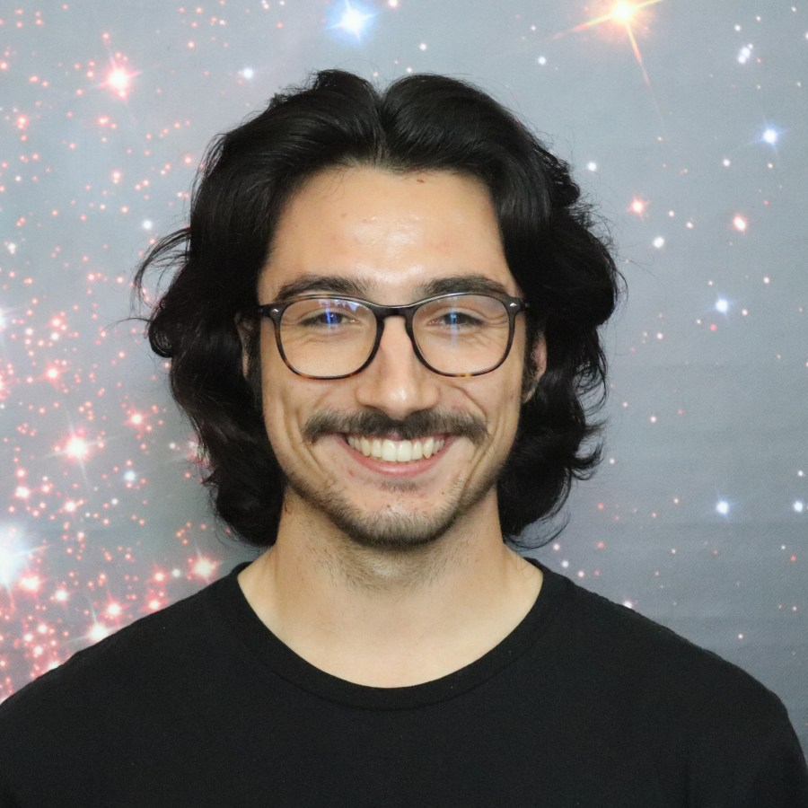
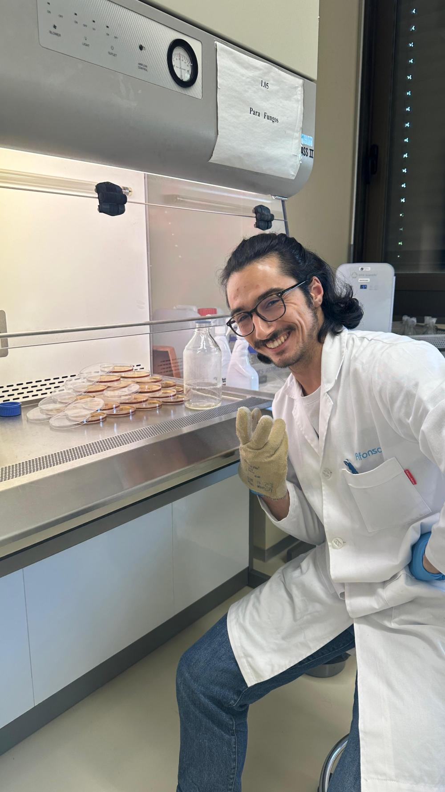

Astrobiology & exoplanet habitability
Afonso Mota.
Exploring life's possibilities beyond Earth.
I'm a PhD candidate in Astronomy, connecting microbiology and astrophysics to understand where life could survive in the universe.


working with Instituto de Astrofísica e Ciências do EspaçoCenter for Astrophysics of the University of Porto (CAUP) CIIMARUniversity of Porto FCUPFaculty of Sciences
University of Porto
My work brings together planetary environments and the limits of microbial life. I model conditions on other worlds and use laboratory experiments to investigate how microorganisms survive and grow in extreme environments.
I'm interested in habitability across the Solar System and beyond, from Mars and icy moons to rocky exoplanets. Alongside research, I help bring astrobiology to wider audiences as a co-creator of AstroBioLusitanos.
Academic journey
From biology to astronomy.
PhD in Astronomy
Faculty of Sciences, University of Porto · Portugal
MSc in Biology of Extreme Environments
University of Naples Federico II · Italy
Specialization in Astrobiology · Thesis: “Microbial Survival on Exoplanets: Habitability and the Role of Melanin”BSc in Biology, with a Minor in Physics
Faculty of Sciences, University of Lisbon · Portugal
Let's connect.
For research, collaborations, or a conversation about astrobiology.